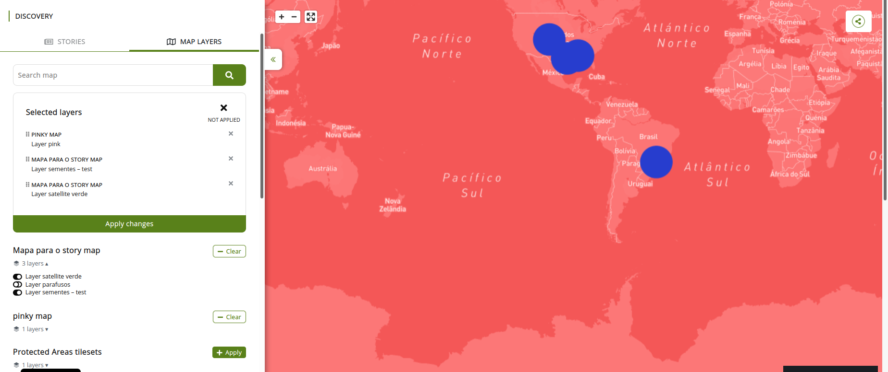
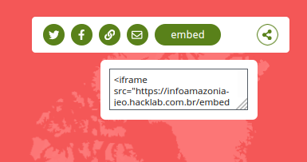

Discovery
Discovery page is an interactive map which the user can add layers, see stories based os published posts and share it's own customized map with others. Discovery page has a left sidebar with two tabs: STORIES and MAP LAYERS. You can hide this sidebar by clicking on the two left arrow icon, at the right of the sidebar.
Stories
Stories are the geolocated posts that are shown on the map. Clicking on SHOW FILTERS allows you to filter these stories by date and tags. Below these filters, a list with the result will be shown. Each result is also a link to the story itself. Also, hovering the mouse on a map marker will highlight the related story int the left sidebar. In the same way, hovering the mouse on View in map text will highlight the map marker realted to it.

Map Layers
In Map Layers tab you can search for maps and apply its layers to your interactive map. You can filter maps by name and select different layers from different maps. After selecting at least one layer from a map, you can click on Clear to remove all the select layers from this map from the discovery map. It is also possible to add all layers from a map with one single click when selecting Apply next to a map result.
At the top of the sidebar, you will be able to see all the selected layers, allowing you to remove some of them. After reviewing these layers, you need to click on Apply changes so that they'll be shown on discovery map.

Sharing
At the right-top side of the map, there's a share button where you can share the content on Twitter, Facebook, E-mail or even generate a custom link for your map. Also, clicking on embed makes a popup appears with a HTML code to embed your custom map into another website.
